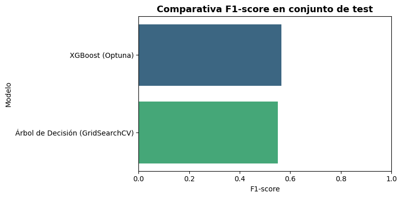
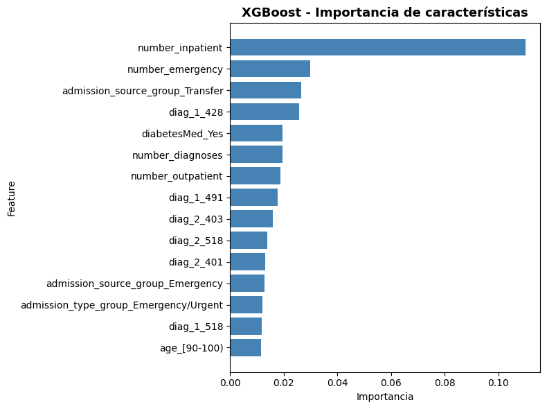
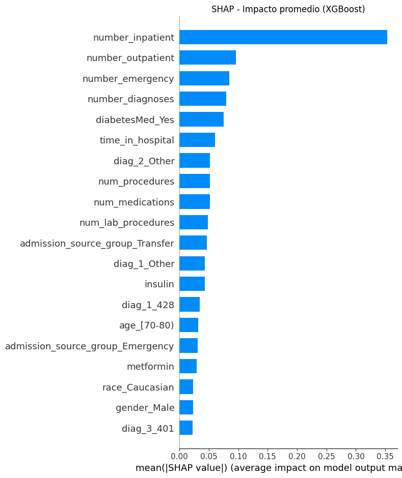
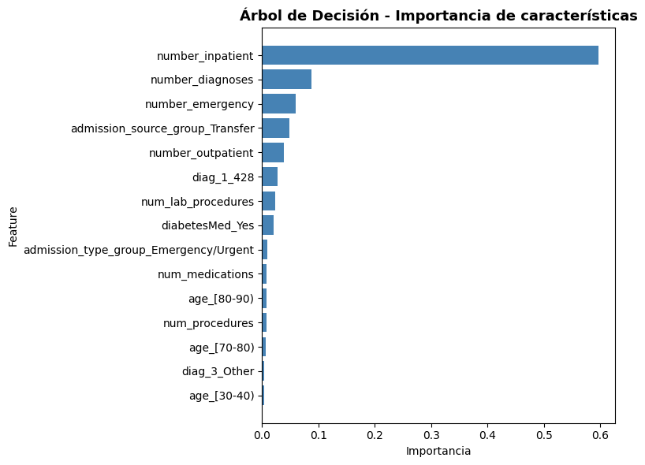
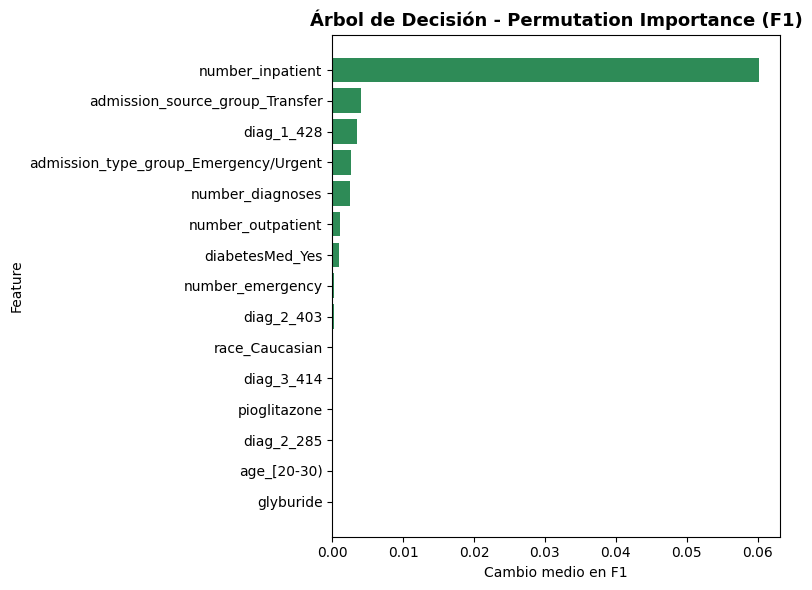

Validacion Avanzada, Tuning e Interpretabilidad#
En este notebook aplicamos tecnicas avanzadas de validacion, optimizacion de hiperparametros e interpretabilidad de modelos.
Objetivo#
Realizar un analisis exhaustivo de los tres mejores modelos identificados en la etapa de evaluacion:
XGBoost
Random Forest
Arbol de Decision
Metodologia#
Tuning de Hiperparametros: Uso de sklearn.Pipeline con GridSearchCV y BayesSearchCV
Validacion Cruzada: StratifiedKFold con minimo 5 folds
Interpretabilidad: Aplicacion de feature_importances_, SHAP y Permutation Importance
Datos#
Utilizamos los datos preprocesados de ../data/processed/:
Escalados con StandardScaler
Codificados (One-Hot Encoding)
Train balanceado con SMOTE
Sin valores faltantes
1. Importar Librerias#
# Librerias basicas
import pandas as pd
import numpy as np
import matplotlib.pyplot as plt
import seaborn as sns
import warnings
import time
from pathlib import Path
# Modelos de clasificacion
from sklearn.tree import DecisionTreeClassifier
from sklearn.ensemble import RandomForestClassifier
from xgboost import XGBClassifier
# Pipeline y transformadores
from sklearn.pipeline import Pipeline
from sklearn.preprocessing import StandardScaler
# Validacion cruzada
from sklearn.model_selection import (
StratifiedKFold, cross_val_score, cross_validate
)
# Busqueda de hiperparametros
from sklearn.model_selection import GridSearchCV
from skopt import BayesSearchCV
from skopt.space import Real, Integer, Categorical
from optuna.integration import OptunaSearchCV
import optuna
# Metricas
from sklearn.metrics import (
accuracy_score, precision_score, recall_score, f1_score,
roc_auc_score, make_scorer, classification_report
)
# Interpretabilidad
from sklearn.inspection import permutation_importance
import shap
warnings.filterwarnings('ignore')
# Configuracion de visualizacion
plt.style.use('default')
sns.set_palette("pastel")
pd.set_option('display.max_columns', None)
print("Librerias importadas correctamente")
Librerias importadas correctamente
2. Cargar Datos Preprocesados#
print("Cargando datos procesados de '../data/processed/'...\n")
# Cargar datos de entrenamiento (BALANCEADOS con SMOTE)
X_train = pd.read_csv('../data/processed/X_train.csv')
y_train = pd.read_csv('../data/processed/y_train.csv').values.ravel()
# Cargar datos de validacion (SIN balancear)
X_val = pd.read_csv('../data/processed/X_val.csv')
y_val = pd.read_csv('../data/processed/y_val.csv').values.ravel()
# Cargar datos de test (SIN balancear)
X_test = pd.read_csv('../data/processed/X_test.csv')
y_test = pd.read_csv('../data/processed/y_test.csv').values.ravel()
print("Datos cargados exitosamente\n")
# Informacion de los datos
print("="*60)
print(" "*15 + "INFORMACION DE LOS DATOS")
print("="*60)
print(f"\nDimensiones:")
print(f" Train: {X_train.shape[0]:>7,} muestras × {X_train.shape[1]:>3} features")
print(f" Validation: {X_val.shape[0]:>7,} muestras × {X_val.shape[1]:>3} features")
print(f" Test: {X_test.shape[0]:>7,} muestras × {X_test.shape[1]:>3} features")
print(f"\nBalance de clases (Test - datos reales):")
test_counts = pd.Series(y_test).value_counts()
print(f" Clase 0: {test_counts[0]:>7,} ({test_counts[0]/len(y_test)*100:>5.1f}%)")
print(f" Clase 1: {test_counts[1]:>7,} ({test_counts[1]/len(y_test)*100:>5.1f}%)")
print("\n" + "="*60)
# Guardar nombres de features
feature_names = X_train.columns.tolist()
print(f"\nTotal de features: {len(feature_names)}")
Cargando datos procesados de '../data/processed/'...
Datos cargados exitosamente
============================================================
INFORMACION DE LOS DATOS
============================================================
Dimensiones:
Train: 71,236 muestras × 113 features
Validation: 15,265 muestras × 113 features
Test: 15,265 muestras × 113 features
Balance de clases (Test - datos reales):
Clase 0: 8,230 ( 53.9%)
Clase 1: 7,035 ( 46.1%)
============================================================
Total de features: 113
Datos cargados exitosamente
============================================================
INFORMACION DE LOS DATOS
============================================================
Dimensiones:
Train: 71,236 muestras × 113 features
Validation: 15,265 muestras × 113 features
Test: 15,265 muestras × 113 features
Balance de clases (Test - datos reales):
Clase 0: 8,230 ( 53.9%)
Clase 1: 7,035 ( 46.1%)
============================================================
Total de features: 113
# Convertir DataFrames a NumPy arrays para evitar problemas con nombres de columnas
print("Convirtiendo DataFrames a NumPy arrays...\n")
X_train_array = X_train.values
X_val_array = X_val.values
X_test_array = X_test.values
print("Conversion completada")
print(f" X_train: {X_train_array.shape}")
print(f" X_val: {X_val_array.shape}")
print(f" X_test: {X_test_array.shape}")
Convirtiendo DataFrames a NumPy arrays...
Conversion completada
X_train: (71236, 113)
X_val: (15265, 113)
X_test: (15265, 113)
3. Estrategia de Validación y Métricas#
Definimos la estrategia de validación cruzada, las métricas que monitorizaremos durante el ajuste de hiperparámetros y utilidades para evaluar los modelos sintonizados.
# =========================================
# 3. Estrategia de validación y utilidades
# =========================================
print("Configurando validación cruzada estratificada y métricas personalizadas...\n")
cv_strategy = StratifiedKFold(n_splits=5, shuffle=True, random_state=42)
scoring = {
'f1': make_scorer(f1_score),
'precision': make_scorer(precision_score),
'recall': make_scorer(recall_score),
'roc_auc': make_scorer(roc_auc_score, needs_threshold=True)
}
def _descomponer_modelo(modelo, X):
"""Devuelve el estimador final entrenado y el conjunto de features transformadas."""
Xt = X.copy() if isinstance(X, pd.DataFrame) else np.asarray(X)
estimador_final = modelo
if isinstance(modelo, Pipeline):
Xt_transformado = Xt
for _, paso in modelo.steps[:-1]:
if paso == 'passthrough':
continue
Xt_transformado = paso.transform(Xt_transformado)
estimador_final = modelo.steps[-1][1]
return estimador_final, Xt_transformado
return estimador_final, Xt
def _predecir(modelo, X):
"""Obtiene predicciones y scores de decision manejando Pipelines con pasos 'passthrough'."""
estimador, Xt = _descomponer_modelo(modelo, X)
y_pred = estimador.predict(Xt)
if hasattr(estimador, 'predict_proba'):
y_scores = estimador.predict_proba(Xt)[:, 1]
elif hasattr(estimador, 'decision_function'):
y_scores = estimador.decision_function(Xt)
else:
y_scores = y_pred
return y_pred, y_scores
def evaluar_pipeline(nombre, modelo, datasets):
"""Calcula métricas clave para un modelo/pipeline en distintos conjuntos."""
registros = []
for dataset_name, X_data, y_data in datasets:
y_pred, y_scores = _predecir(modelo, X_data)
accuracy = accuracy_score(y_data, y_pred)
precision = precision_score(y_data, y_pred, zero_division=0)
recall = recall_score(y_data, y_pred, zero_division=0)
f1 = f1_score(y_data, y_pred, zero_division=0)
try:
auc = roc_auc_score(y_data, y_scores)
except ValueError:
auc = np.nan
registros.append({
'Modelo': nombre,
'Conjunto': dataset_name,
'Accuracy': accuracy,
'Precision': precision,
'Recall': recall,
'F1-score': f1,
'AUC': auc
})
return registros
resultados_modelos = []
modelos_tunados = {}
datasets_eval = [('Validación', X_val_array, y_val), ('Test', X_test_array, y_test)]
print("Configuración lista\n")
Configurando validación cruzada estratificada y métricas personalizadas...
Configuración lista
3.1. XGBoost + OptunaSearchCV#
# =========================================
# XGBoost con Pipeline + Optuna
# =========================================
print("Iniciando optimización con Optuna para XGBoost...\n")
optuna.logging.set_verbosity(optuna.logging.WARNING)
def xgb_objective(trial):
params = {
'max_depth': trial.suggest_int('max_depth', 3, 9),
'learning_rate': trial.suggest_float('learning_rate', 0.01, 0.3, log=True),
'n_estimators': trial.suggest_int('n_estimators', 150, 1200),
'subsample': trial.suggest_float('subsample', 0.6, 1.0),
'colsample_bytree': trial.suggest_float('colsample_bytree', 0.6, 1.0),
'gamma': trial.suggest_float('gamma', 0.0, 1.5),
'reg_alpha': trial.suggest_float('reg_alpha', 0.0, 1.0),
'reg_lambda': trial.suggest_float('reg_lambda', 1.0, 10.0),
'min_child_weight': trial.suggest_int('min_child_weight', 1, 10),
'objective': 'binary:logistic',
'eval_metric': 'logloss',
'use_label_encoder': False,
'tree_method': 'hist',
'n_jobs': -1,
'random_state': 42,
'verbosity': 0
}
pipeline = Pipeline([
('preprocessor', 'passthrough'),
('classifier', XGBClassifier(**params))
])
score = cross_val_score(
pipeline,
X_train_array,
y_train,
cv=cv_strategy,
scoring='roc_auc',
n_jobs=-1
).mean()
return score
start_time = time.time()
study = optuna.create_study(direction='maximize')
study.optimize(xgb_objective, n_trials=80, show_progress_bar=False)
elapsed = time.time() - start_time
print(f"Optuna finalizado en {elapsed:.2f} segundos")
print(f"Mejor AUC en validación cruzada: {study.best_value:.4f}")
print("Mejores hiperparámetros encontrados:")
for clave, valor in study.best_params.items():
print(f" {clave}: {valor}")
best_params = study.best_params.copy()
best_params.update({
'objective': 'binary:logistic',
'eval_metric': 'logloss',
'use_label_encoder': False,
'tree_method': 'hist',
'n_jobs': -1,
'random_state': 42,
'verbosity': 0
})
xgb_mejor_pipeline = Pipeline([
('preprocessor', 'passthrough'),
('classifier', XGBClassifier(**best_params))
])
xgb_mejor_pipeline.fit(X_train_array, y_train)
modelos_tunados['XGBoost'] = xgb_mejor_pipeline
xgb_registros = evaluar_pipeline('XGBoost (Optuna)', xgb_mejor_pipeline, datasets_eval)
resultados_modelos.extend(xgb_registros)
display(pd.DataFrame(xgb_registros))
Iniciando optimización con Optuna para XGBoost...
Optuna finalizado en 1291.91 segundos
Mejor AUC en validación cruzada: 0.6808
Mejores hiperparámetros encontrados:
max_depth: 5
learning_rate: 0.023326582037893454
n_estimators: 888
subsample: 0.6525801197234337
colsample_bytree: 0.8594365619005631
gamma: 1.1173834179782174
reg_alpha: 0.9769098509860692
reg_lambda: 5.8778578966445245
min_child_weight: 10
Optuna finalizado en 1291.91 segundos
Mejor AUC en validación cruzada: 0.6808
Mejores hiperparámetros encontrados:
max_depth: 5
learning_rate: 0.023326582037893454
n_estimators: 888
subsample: 0.6525801197234337
colsample_bytree: 0.8594365619005631
gamma: 1.1173834179782174
reg_alpha: 0.9769098509860692
reg_lambda: 5.8778578966445245
min_child_weight: 10
| Modelo | Conjunto | Accuracy | Precision | Recall | F1-score | AUC | |
|---|---|---|---|---|---|---|---|
| 0 | XGBoost (Optuna) | Validación | 0.630789 | 0.623675 | 0.501706 | 0.556081 | 0.681183 |
| 1 | XGBoost (Optuna) | Test | 0.638257 | 0.633775 | 0.509453 | 0.564854 | 0.688086 |
Nota: Optuna optimiza sobre AUC para evitar soluciones sin positivos; posteriormente se reporta F1 en validación y test.
3.3. Árbol de Decisión + GridSearchCV#
# =========================================
# Árbol de Decisión con Pipeline + GridSearchCV
# =========================================
print("Iniciando GridSearchCV para Árbol de Decisión...\n")
dt_pipeline = Pipeline([
('preprocessor', 'passthrough'),
('classifier', DecisionTreeClassifier(random_state=42))
])
dt_param_grid = {
'classifier__max_depth': [3, 5, 7, 9, None],
'classifier__min_samples_split': [2, 4, 6, 10, 14],
'classifier__min_samples_leaf': [1, 2, 3, 5, 8],
'classifier__criterion': ['gini', 'entropy', 'log_loss']
}
dt_grid_search = GridSearchCV(
estimator=dt_pipeline,
param_grid=dt_param_grid,
cv=cv_strategy,
scoring={'f1': make_scorer(f1_score), 'roc_auc': scoring['roc_auc']},
refit='roc_auc',
n_jobs=-1,
verbose=0
)
start_time = time.time()
dt_grid_search.fit(X_train_array, y_train)
elapsed = time.time() - start_time
print(f"GridSearch finalizado en {elapsed:.2f} segundos")
print("Mejores hiperparámetros (según AUC):")
for clave, valor in dt_grid_search.best_params_.items():
print(f" {clave}: {valor}")
dt_mejor_pipeline = dt_grid_search.best_estimator_
modelos_tunados['Árbol de Decisión'] = dt_mejor_pipeline
dt_registros = evaluar_pipeline('Árbol de Decisión (GridSearchCV)', dt_mejor_pipeline, datasets_eval)
resultados_modelos.extend(dt_registros)
display(pd.DataFrame(dt_registros))
Iniciando GridSearchCV para Árbol de Decisión...
GridSearch finalizado en 486.02 segundos
Mejores hiperparámetros (según AUC):
classifier__criterion: entropy
classifier__max_depth: 7
classifier__min_samples_leaf: 5
classifier__min_samples_split: 2
GridSearch finalizado en 486.02 segundos
Mejores hiperparámetros (según AUC):
classifier__criterion: entropy
classifier__max_depth: 7
classifier__min_samples_leaf: 5
classifier__min_samples_split: 2
| Modelo | Conjunto | Accuracy | Precision | Recall | F1-score | AUC | |
|---|---|---|---|---|---|---|---|
| 0 | Árbol de Decisión (GridSearchCV) | Validación | 0.616508 | 0.603466 | 0.489909 | 0.540791 | 0.648632 |
| 1 | Árbol de Decisión (GridSearchCV) | Test | 0.626924 | 0.618082 | 0.498507 | 0.551892 | 0.660141 |
4. Comparativa de Resultados en Validación y Test#
Métrica de refit: Para evitar soluciones degeneradas (sin positivos), en los ajustes se refitó con AUC y las tablas siguientes muestran las métricas finales (incluyendo F1).
# Consolidar métricas en tabla
metricas_df = pd.DataFrame(resultados_modelos)
metricas_df = metricas_df.sort_values(by=['Conjunto', 'F1-score'], ascending=[True, False])
print("Métricas completas por conjunto:\n")
display(metricas_df)
resumen_test = metricas_df[metricas_df['Conjunto'] == 'Test'].sort_values(by='F1-score', ascending=False)
print("\nRanking en test (ordenado por F1-score):\n")
display(resumen_test)
plt.figure(figsize=(8, 4))
sns.barplot(data=resumen_test, x='F1-score', y='Modelo', palette='viridis')
plt.title('Comparativa F1-score en conjunto de test', fontsize=13, fontweight='bold')
plt.xlim(0, 1)
plt.xlabel('F1-score')
plt.ylabel('Modelo')
plt.tight_layout()
plt.show()
Métricas completas por conjunto:
| Modelo | Conjunto | Accuracy | Precision | Recall | F1-score | AUC | |
|---|---|---|---|---|---|---|---|
| 1 | XGBoost (Optuna) | Test | 0.638257 | 0.633775 | 0.509453 | 0.564854 | 0.688086 |
| 3 | Árbol de Decisión (GridSearchCV) | Test | 0.626924 | 0.618082 | 0.498507 | 0.551892 | 0.660141 |
| 0 | XGBoost (Optuna) | Validación | 0.630789 | 0.623675 | 0.501706 | 0.556081 | 0.681183 |
| 2 | Árbol de Decisión (GridSearchCV) | Validación | 0.616508 | 0.603466 | 0.489909 | 0.540791 | 0.648632 |
Ranking en test (ordenado por F1-score):
| Modelo | Conjunto | Accuracy | Precision | Recall | F1-score | AUC | |
|---|---|---|---|---|---|---|---|
| 1 | XGBoost (Optuna) | Test | 0.638257 | 0.633775 | 0.509453 | 0.564854 | 0.688086 |
| 3 | Árbol de Decisión (GridSearchCV) | Test | 0.626924 | 0.618082 | 0.498507 | 0.551892 | 0.660141 |

5. Interpretabilidad de los Modelos#
def plot_feature_importances(importances, titulo, top_n=15):
"""Visualiza las importancias promedio del modelo."""
fi_df = (
pd.DataFrame({'feature': feature_names, 'importance': importances})
.sort_values('importance', ascending=False)
.head(top_n)
.iloc[::-1]
)
plt.figure(figsize=(8, 6))
plt.barh(fi_df['feature'], fi_df['importance'], color='steelblue')
plt.title(titulo, fontsize=13, fontweight='bold')
plt.xlabel('Importancia')
plt.ylabel('Feature')
plt.tight_layout()
plt.show()
5.1. XGBoost: Feature Importances y SHAP#
xgb_best = modelos_tunados['XGBoost']
xgb_clf, X_val_xgb = _descomponer_modelo(xgb_best, X_val_array)
plot_feature_importances(xgb_clf.feature_importances_, 'XGBoost - Importancia de características')
sample_size = min(200, X_val_xgb.shape[0])
sample_idx = np.random.choice(X_val_xgb.shape[0], size=sample_size, replace=False)
sample_proc = X_val_xgb[sample_idx]
explainer = shap.TreeExplainer(xgb_clf)
shap_values = explainer.shap_values(sample_proc)
if isinstance(shap_values, list):
shap_to_plot = shap_values[1]
else:
shap_to_plot = shap_values
shap.summary_plot(shap_to_plot, sample_proc, feature_names=feature_names, plot_type='bar', show=False)
plt.title('SHAP - Impacto promedio (XGBoost)')
plt.tight_layout()
plt.show()


5.3. Árbol de Decisión: Feature Importances y Permutation Importance#
dt_best = modelos_tunados['Árbol de Decisión']
dt_clf, X_val_dt = _descomponer_modelo(dt_best, X_val_array)
plot_feature_importances(dt_clf.feature_importances_, 'Árbol de Decisión - Importancia de características')
perm_dt = permutation_importance(
dt_clf, X_val_dt, y_val,
n_repeats=20,
random_state=42,
n_jobs=-1,
scoring='f1'
)
perm_dt_df = (
pd.DataFrame({'feature': feature_names, 'importance': perm_dt.importances_mean})
.sort_values('importance', ascending=False)
.head(15)
.iloc[::-1]
)
plt.figure(figsize=(8, 6))
plt.barh(perm_dt_df['feature'], perm_dt_df['importance'], color='seagreen')
plt.title('Árbol de Decisión - Permutation Importance (F1)', fontsize=13, fontweight='bold')
plt.xlabel('Cambio medio en F1')
plt.ylabel('Feature')
plt.tight_layout()
plt.show()

